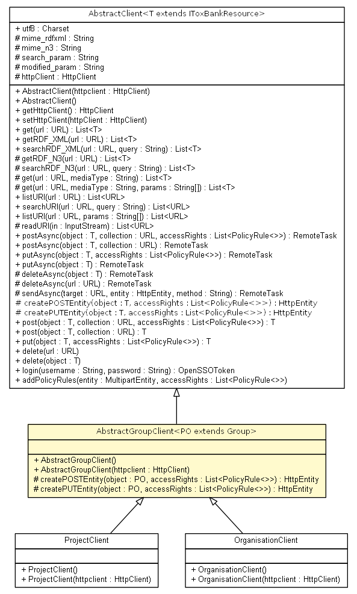

net.toxbank.client.resource
Class AbstractGroupClient<PO extends net.toxbank.client.resource.Group>

java.lang.Object
 net.toxbank.client.resource.AbstractClient<PO>
net.toxbank.client.resource.AbstractGroupClient<PO>
net.toxbank.client.resource.AbstractClient<PO>
net.toxbank.client.resource.AbstractGroupClient<PO>
- Type Parameters:
PO -
- Direct Known Subclasses:
- OrganisationClient, ProjectClient
public abstract class AbstractGroupClient<PO extends net.toxbank.client.resource.Group>
- extends AbstractClient<PO>
Common top class for ProjectClient and OrganisationClient
- Author:
- nina
|
Method Summary |
protected org.apache.http.HttpEntity |
createPOSTEntity(PO object,
java.util.List<net.toxbank.client.policy.PolicyRule> accessRights)
|
protected org.apache.http.HttpEntity |
createPUTEntity(PO object,
java.util.List<net.toxbank.client.policy.PolicyRule> accessRights)
|
| Methods inherited from class net.toxbank.client.resource.AbstractClient |
addPolicyRules, delete, delete, deleteAsync, deleteAsync, get, get, get, getHttpClient, getRDF_N3, getRDF_XML, listURI, listURI, login, post, post, postAsync, postAsync, put, putAsync, putAsync, readURI, searchRDF_N3, searchRDF_XML, searchURI, sendAsync, setHttpClient |
| Methods inherited from class java.lang.Object |
clone, equals, finalize, getClass, hashCode, notify, notifyAll, toString, wait, wait, wait |
AbstractGroupClient
public AbstractGroupClient()
AbstractGroupClient
public AbstractGroupClient(org.apache.http.client.HttpClient httpclient)
createPOSTEntity
protected org.apache.http.HttpEntity createPOSTEntity(PO object,
java.util.List<net.toxbank.client.policy.PolicyRule> accessRights)
throws InvalidInputException,
java.lang.Exception
- Specified by:
createPOSTEntity in class AbstractClient<PO extends net.toxbank.client.resource.Group>
- Parameters:
object - The object to be created
- Returns:
HttpEntity
- Throws:
java.lang.Exception
InvalidInputException
createPUTEntity
protected org.apache.http.HttpEntity createPUTEntity(PO object,
java.util.List<net.toxbank.client.policy.PolicyRule> accessRights)
throws InvalidInputException,
java.lang.Exception
- Specified by:
createPUTEntity in class AbstractClient<PO extends net.toxbank.client.resource.Group>
- Parameters:
object - the object to be updated
- Returns:
-
- Throws:
java.lang.Exception
InvalidInputException
Copyright © 2011-2012 ToxBank project. All Rights Reserved.